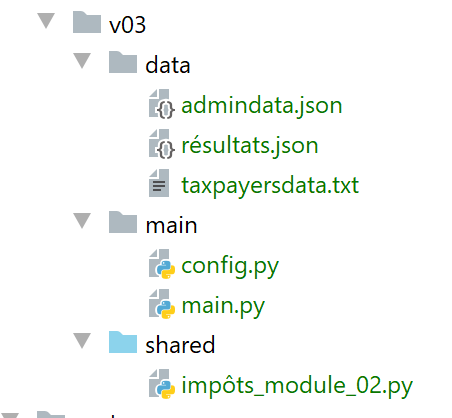
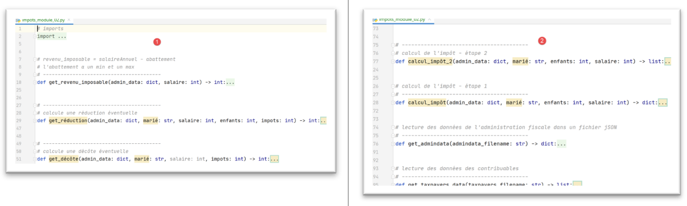

11. تمرين تطبيقي: الإصدار 3

تقدم هذه النسخة الجديدة تغييرين:
- يتم وضع البيانات اللازمة لحساب الضريبة، والتي توفرها إدارة الضرائب، في ملف jSON [admindata.json]:
{
"limites": [9964, 27519, 73779, 156244, 0],
"coeffR": [0, 0.14, 0.3, 0.41, 0.45],
"coeffN": [0, 1394.96, 5798, 13913.69, 20163.45],
"PLAFOND_QF_DEMI_PART": 1551,
"PLAFOND_REVENUS_CELIBATAIRE_POUR_REDUCTION": 21037,
"PLAFOND_REVENUS_COUPLE_POUR_REDUCTION": 42074,
"VALEUR_REDUC_DEMI_PART": 3797,
"PLAFOND_DECOTE_CELIBATAIRE": 1196,
"PLAFOND_DECOTE_COUPLE": 1970,
"PLAFOND_IMPOT_COUPLE_POUR_DECOTE": 2627,
"PLAFOND_IMPOT_CELIBATAIRE_POUR_DECOTE": 1595,
"ABATTEMENT_DIXPOURCENT_MAX": 12502,
"ABATTEMENT_DIXPOURCENT_MIN": 437
}
- كما سيتم وضع نتائج حساب الضريبة في ملف jSON [résultats.json]:
[
{
"marié": "oui",
"enfants": 2,
"salaire": 55555,
"impôt": 2814,
"surcôte": 0,
"décôte": 0,
"réduction": 0,
"taux": 0.14
},
{
"marié": "oui",
"enfants": 2,
"salaire": 50000,
"impôt": 1384,
"surcôte": 0,
"décôte": 384,
"réduction": 347,
"taux": 0.14
},
…
{
"marié": "oui",
"enfants": 3,
"salaire": 200000,
"impôt": 42842,
"surcôte": 17283,
"décôte": 0,
"réduction": 0,
"taux": 0.41
}
]
11.1. نص التكوين [config.py]
سيكون البرنامج النصي للتكوين كما يلي:
def configure():
import os
# المسار المطلق لمجلد هذا البرنامج النصي
script_dir = os.path.dirname(os.path.abspath(__file__))
# التبعيات الخاصة بالتطبيق
absolute_dependencies = [
f"{script_dir}/../shared",
]
# تكوين التطبيق
config = {
# المسار المطلق لملف دافعي الضرائب
"taxpayersFilename": f"{script_dir}/../data/taxpayersdata.txt",
# المسار المطلق لملف النتائج
"resultsFilename": f"{script_dir}/../data/résultats.json",
# المسار المطلق لملف بيانات مصلحة الضرائب
"admindataFilename": f"{script_dir}/../data/admindata.json"
}
# تحديث مسار النظام
from myutils import set_syspath
set_syspath(absolute_dependencies)
# تحديد التكوين
return config
- السطر 8: نضيف المجلد [shared] إلى مسار Python. يحتوي هذا المجلد على الوحدة النمطية [impôts_module_02] التي يستخدمها البرنامج النصي الرئيسي؛
11.2. النص البرمجي الرئيسي [main.py]
النص البرمجي الرئيسي للإصدار 3 هو كما يلي:
# يتم تكوين التطبيق
import config
config = config.configure()
# تم تكوين مسار النظام (syspath) - يمكن الآن إجراء عمليات الاستيراد
from impôts_module_02 import calcul_impôt, get_admindata, get_taxpayers_data, record_results_in_json_file
# ملف دافعي الضرائب
taxpayers_filename = config['taxpayersFilename']
# ملف النتائج
results_filename = config['resultsFilename']
# ملف بيانات مصلحة الضرائب
admindata_filename = config['admindataFilename']
# الرمز
try:
# قراءة بيانات مصلحة الضرائب
admindata = get_admindata(admindata_filename)
# قراءة بيانات دافعي الضرائب
taxpayers = get_taxpayers_data(taxpayers_filename)
# قائمة النتائج
results = []
# حساب ضريبة المكلفين
for taxpayer in taxpayers:
# يُرجع حساب الضريبة قاموسًا من المفاتيح
# ['marié', 'enfants', 'salaire', 'impôt', 'surcôte', 'décôte', 'réduction', 'taux']
result = calcul_impôt(admindata, taxpayer['marié'], taxpayer['enfants'], taxpayer['salaire'])
# تمت إضافة القاموس إلى قائمة النتائج
results.append(result)
# يتم تسجيل النتائج
record_results_in_json_file(results_filename, results)
except BaseException as erreur:
# قد تحدث أخطاء مختلفة: عدم وجود ملف، أو محتوى ملف غير صحيح
# يتم عرض الخطأ والخروج من التطبيق
print(f"L'erreur suivante s'est produite : {erreur}]\n")
finally:
print("Travail terminé...")
ملاحظات
- الأسطر 2-4: يتم تكوين التطبيق، ولا سيما مسار Python الخاص به؛
- السطر 7: يتم استيراد الوظائف المطلوبة في [main.py]؛
- الأسطر 9-14: يتم استرداد أسماء الملفات التي يستخدمها التطبيق من ملف التكوين؛
- يتميز البرنامج النصي الرئيسي للإصدار 3 بثلاثة اختلافات مقارنةً بالإصدارين 1 و2:
- السطر 21: يتم استخلاص بيانات مصلحة الضرائب من الملف jSON [./data/admindata.json]؛
- السطر 32: يتم وضع نتائج حساب الضريبة في الملف jSON [./data/résultats.json]؛
- السطر 7: توجد وظائف الإصدار 3 في الوحدة النمطية [impots.modules.impôts_module_02]؛
11.3. الوحدة النمطية [impots.v02.modules.impôts_module_02]
تتكون الوحدة النمطية [impots.v02.modules.impôts_module_02] من البنية التالية:

- توجد في الوحدة وظائف موجودة بالفعل في الوحدة المستخدمة في الإصدار 1، ولكن مع اختلاف واحد. عندما تستعيد وحدة الإصدار 2 وظيفة موجودة في وحدة الإصدار 1، فإنها تفعل ذلك مع معلمة إضافية: [adminData] (الأسطر 29، 51، 77، 127). يمثل هذا المعامل قاموس البيانات الضريبية المستمدة من الملف jSON و[adminData.json]. في الوحدة النمطية للإصدار 1، لم تكن هناك حاجة إلى تمرير هذه البيانات إلى الوظائف لأنها كانت محددة بشكل عام لتلك الوظائف، مما جعل الوظائف على علم بها؛
11.4. قراءة بيانات مصلحة الضرائب
الدالة [get_admindata] هي كما يلي:
# قراءة بيانات مصلحة الضرائب في ملف jSON
# ----------------------------------------
def get_admindata(admindata_filename: str) -> dict:
# قراءة البيانات من مصلحة الضرائب
# يتم السماح بظهور الاستثناءات المحتملة: عدم وجود الملف، محتوى jSON غير صحيح
file = None
try:
# فتح ملف jSON للقراءة
file = codecs.open(admindata_filename, "r", "utf8")
# نقل المحتوى إلى قاموس
admin_data = json.load(file)
# إرجاع النتيجة
return admin_data
finally:
# إغلاق الملف إذا كان مفتوحًا
if file:
file.close()
- السطر 9: يتم استرداد قاموس الصور من الملف jSON الذي تمت قراءته؛
11.5. تسجيل النتائج
الوظيفة [record_results_in_json_file] هي كما يلي:
# كتابة النتائج في ملف jSON
# ----------------------------------------
def record_results_in_json_file(results_filename: str, results: list):
file = None
try:
# فتح ملف النتائج
file = codecs.open(results_filename, "w", "utf8")
# الكتابة دفعة واحدة
json.dump(results, file, ensure_ascii=False)
finally:
# يتم إغلاق الملف إذا كان مفتوحًا
if file:
file.close()
- السطر 7: يتم إنشاء ملف مشفر بتنسيق UTF-8؛
- السطر 9: يتم كتابة القائمة [results] في الملف jSON. لا يتم تجاوز أحرف UTF-8 (ensure_ascii=False)؛
11.6. تعديل الدوال
تتلقى بعض الدوال الآن معلمة إضافية هي [admin_data]. وهذا يغير طريقة كتابتها قليلاً. لنأخذ على سبيل المثال الدالة [calcul_impôt]:
# حساب الضريبة - الخطوة 1
# ----------------------------------------
def calcul_impôt(admin_data: dict, marié: str, enfants: int, salaire: int) -> dict:
# متزوج: نعم، لا
# الأطفال: عدد الأطفال
# الراتب: الراتب السنوي
# الحدود، المعامل، المعامل: جداول البيانات التي تسمح بحساب الضريبة
#
# حساب الضريبة مع وجود أطفال
result1 = calcul_impôt_2(admin_data, marié, enfants, salaire)
impot1 = result1["impôt"]
# حساب الضريبة بدون أطفال
if enfants != 0:
result2 = calcul_impôt_2(admin_data, marié, 0, salaire)
impot2 = result2["impôt"]
# تطبيق الحد الأقصى لمعدل الإعالة العائلية
if enfants < 3:
# PLAFOND_QF_DEMI_PART يورو للطفلين الأولين
impot2 = impot2 - enfants * admin_data['plafond_qf_demi_part']
else:
# PLAFOND_QF_DEMI_PART يورو للطفلين الأولين، ضعف هذا المبلغ للأطفال التاليين
impot2 = impot2 - 2 * admin_data['plafond_qf_demi_part'] - (enfants - 2) * 2 * admin_data[
'plafond_qf_demi_part']
else:
impot2 = impot1
result2 = result1
# يُتخذ الضريبة الأعلى مع المعدل والزيادة المرتبطة بها
if impot1 > impot2:
impot = impot1
taux = result1["taux"]
surcôte = result1["surcôte"]
else:
surcôte = impot2 - impot1 + result2["surcôte"]
impot = impot2
taux = result2["taux"]
# حساب أي خصم محتمل
décôte = get_décôte(admin_data, marié, salaire, impot)
impot -= décôte
# حساب أي تخفيض محتمل في الضرائب
réduction = get_réduction(admin_data, marié, salaire, enfants, impot)
impot -= réduction
# النتيجة
return {"marié": marié, "enfants": enfants, "salaire": salaire, "impôt": math.floor(impot), "surcôte": surcôte,
"décôte": décôte, "réduction": réduction, "taux": taux}
ملاحظات
- عندما تستدعي الدالة [calcul_impôt] دوال أخرى، فإنها تمرر الدالة [admin_data] كمعلمة أولى (الأسطر 10 و14 و39 و42)؛
- عندما تستخدم [calcul_impôt] ثوابت ضريبية، فإنها تمرر الآن عبر القاموس [admin_data] (الأسطر 19، 22)؛
تخضع جميع الدوال التي تتلقى [admin_data] كمعلمة لنفس هذه التعديلات.
11.7. النتائج
النتائج التي تم الحصول عليها هي تلك المعروضة في بداية الفقرة 8.3.